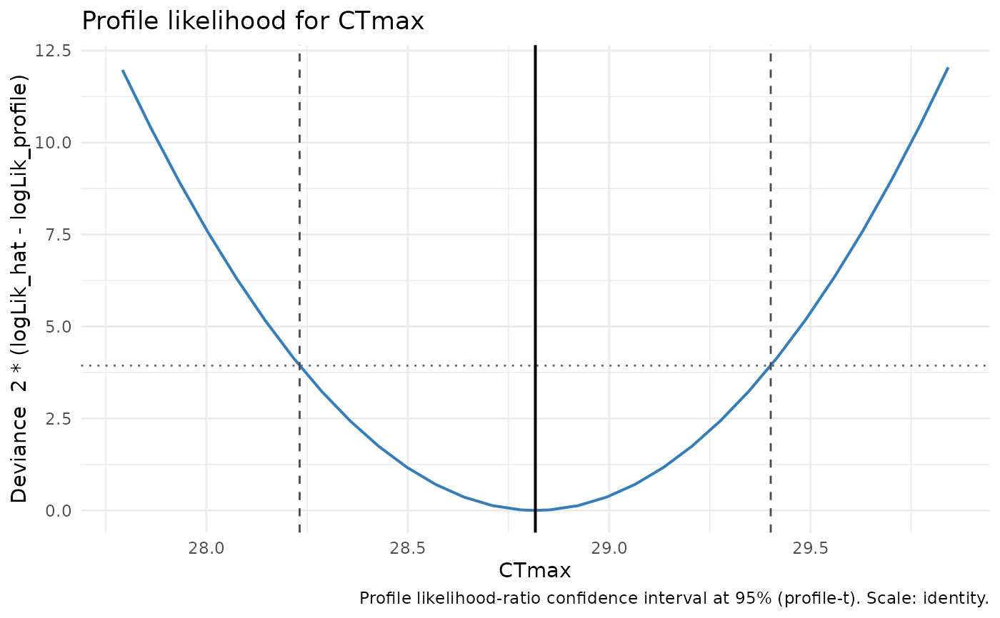

plot() for a "profile_tls_profile" object draws the likelihood-ratio
deviance curve against the natural-scale parameter. A dotted horizontal line
marks the profile-t cutoff qt(1 - alpha/2, df)^2; a solid vertical line marks the
point estimate; dashed vertical lines mark the interval endpoints when they
are finite. The wording is deliberately "confidence" – this
is a likelihood curve, never a posterior. A non-closing side is
annotated rather than drawn as a closed bound.
Usage
# S3 method for class 'profile_tls_profile'
plot(x, ...)Arguments
- x
A
"profile_tls_profile"object fromprofile.profile_tls().- ...
Reserved; must be empty.
Details
This is the per-parameter profile curve; the full Confidence-Eye interval displays are added in Phase 4.
Examples
d <- simulate_tls(family = "binomial", CTmax = 36, z = 4, seed = 1)
fit <- fit_tls(d, y = survived, n = total, time = duration, temp = temp,
family = "binomial", tref = 1)
plot(profile(fit, "CTmax"))
